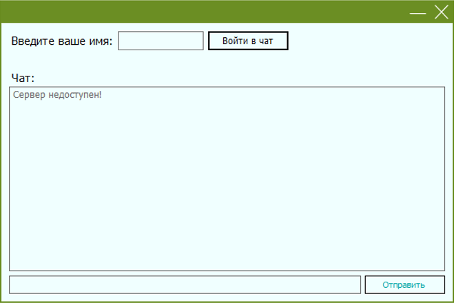
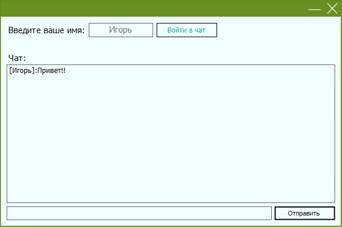

Данная программа была написана специально
для сотрудников ГАУ МО "Ступинское Информагентство"
Приложение было разработано с помощью языка С#.
Оно представляет собой программу локального чата только для сотрудников одной организации. Приложение было разработано специально для сотрудников ГАУ МО "Ступинское Информагентство", но универсальный и интуитивный интрефейс и простота установки делают чат универсальным для любой организации/фирмы/компании и т.д.
Чат удобен и понятен любому, даже начинающему пользователю ПК и сети Интернет, создан для скорости и простоты коммуникации с коллегами на рабочем месте, а также для большей конфиденциальности: для подключения к чату программа запрашивает только имя пользователя, остальные данные остаются личными.


Для установки сервера просьба обратиться к программисту, который создавал программу